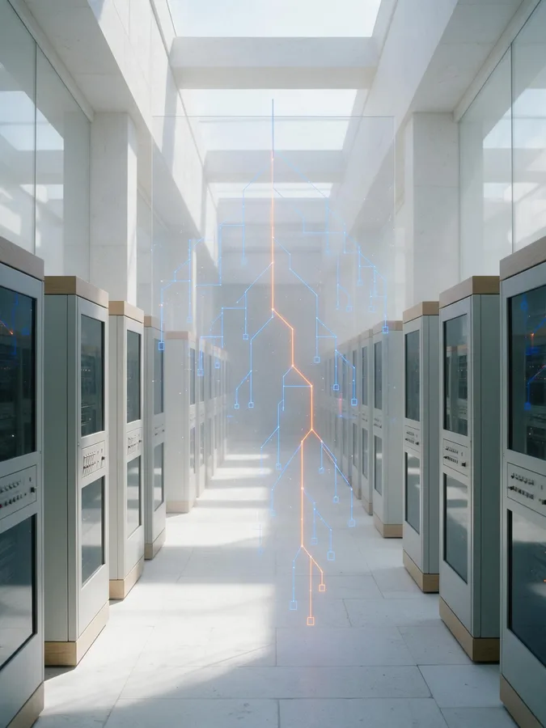
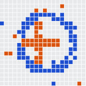
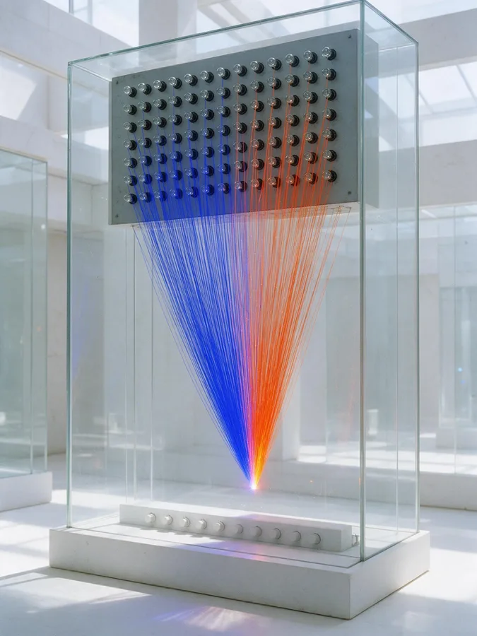
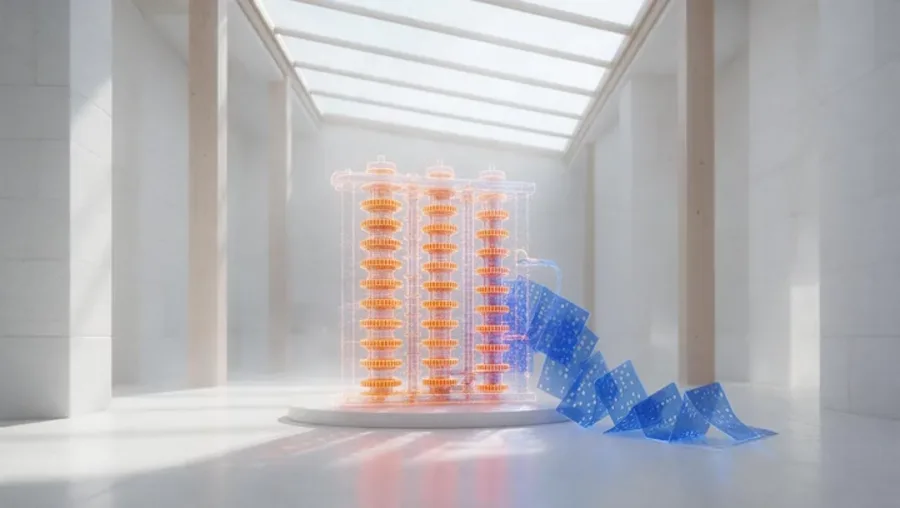
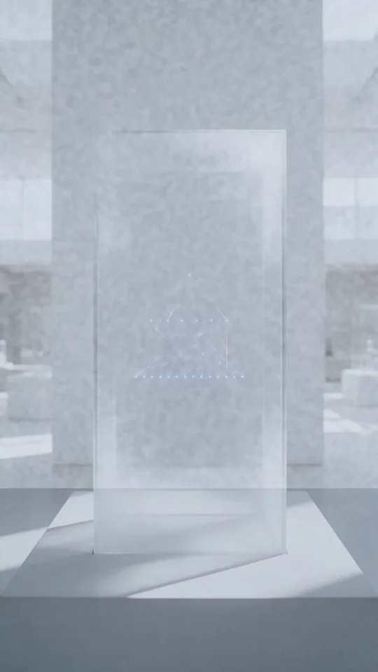
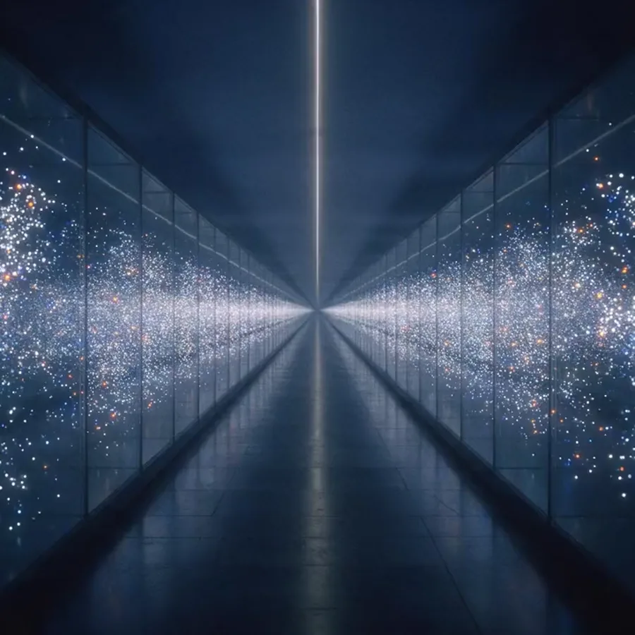
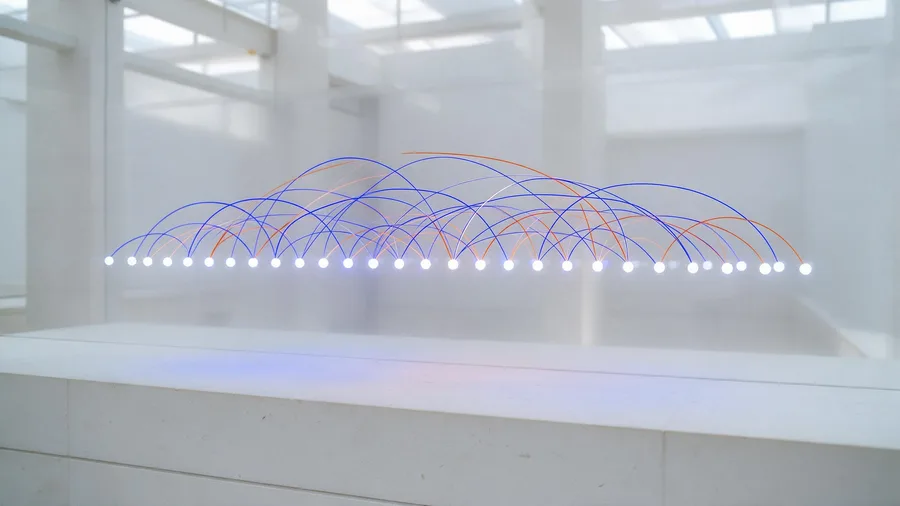

Cabinets under a rigid tree of light. An imagined exhibit. Generated for this page; not XCON.
XCON
At Digital Equipment Corporation, the expert system XCON configures computer orders from a hand-built rule base.

What this is
SubscribeA field guide from Ada Lovelace's Note G to the price of a million tokens in 2026.
Set in markup by claude-opus-5-5, 16 November 2026.
Her notes on Babbage's Analytical Engine set out a program for a machine not yet built.
An artificial neuron: a unit that fires when its weighted inputs cross a threshold.
Computing Machinery and Intelligence asks whether machines can think, and how we would tell.
A summer workshop at Dartmouth College gives the work its name: artificial intelligence.
The Mark I wires 400 photocells to weights, and the weights learn from mistakes. The plate in the margin runs his rule.
A calculating engine and its punched cards, drawn in light. An imagined exhibit. Rendered for this page as a camera push into a generated still; not Babbage's engine.

A photocell panel of the kind Rosenblatt wired to weights. Generated for this page; not the Mark I.
Joseph Weizenbaum's ELIZA matched patterns in typed sentences, and its DOCTOR script answered like a therapist. It understood nothing; its users credited it with understanding.
Marvin Minsky and Seymour Papert proved what a single layer of weights cannot compute. XOR, one input or the other but not both, is among them.
James Lighthill told Britain's Science Research Council the field had not delivered. British funding collapsed, and the first winter began.
You have been training the plate in the margin since the title page; asked for XOR, it will not settle.
Sources: Weizenbaum 1966; Minsky and Papert 1969; Lighthill 1973.
A conversation drawn in light freezes behind frosted glass. An imagined exhibit. Rendered for this page from a generated still, graded and frost-composited; not ELIZA.
Industry bought intelligence written down by hand, one rule at a time. Learning carried on out of fashion, and out of the money.

Cabinets under a rigid tree of light. An imagined exhibit. Generated for this page; not XCON.
At Digital Equipment Corporation, the expert system XCON configures computer orders from a hand-built rule base.
Japan's Fifth Generation Computer project sets out to build machines that reason in logic. Rules are the national bet.
A two-layer network wakes as the frost clears. An imagined exhibit. Rendered for this page from a generated still, graded and frost-composited.
Rumelhart, Hinton and Williams popularise it: send the error backward through the layers and adjust every weight.
The rule bases proved costly to keep, and the money left again. Backpropagation was kept alive through the cold. In the margin, the plate has a second layer now, and XOR is solved.
Sources: McDermott 1980; Moto-oka 1982; Rumelhart, Hinton and Williams 1986.
IBM's chess machine beats the world champion, Garry Kasparov, in a match.
A labelled image collection large enough to train, and to judge, vision at scale.
60 million parameters, 15.3 percent top-5 error.
DeepMind's program beats Lee Sedol at Go.
The transformer: attention without recurrence.
Sources: Campbell et al. 2002; Deng et al. 2009; Krizhevsky, Sutskever and Hinton 2012; Silver et al. 2016; Vaswani et al. 2017.
A night gallery of machine cabinets; your scroll moves the camera. An imagined exhibit. Rendered for this page as an eased push into a generated still.
A recurrent network reads a sentence one word at a time, and each step waits for the one before it, so training cannot spread one sequence across parallel hardware.
Attention lets every position look at every other position in a single step. All of those pairwise relations are computed at once as matrix arithmetic, which is exactly what accelerators do well. Make the model and the data larger, and the hardware keeps up.
Source: Vaswani et al., Attention Is All You Need, 2017.
A row of spheres under a canopy of arcs, many brightening at once. An imagined exhibit. Generated for this page, shown ping-ponged.
One catalogue, one day: 25 models from 11 vendors, each a dot at its published price.
21 of 25 serve a window from 1,000,000 to 1,050,000 tokens. Context has converged.
Output price runs from $0.25 to $50 per million tokens. Price has not. The orange dot is claude-opus-5-5, the model that set this page.
Source: Venice AI model catalogue, GET https://api.venice.ai/api/v1/models?type=text, retrieved 2026-11-16. List prices on one reseller, not vendor MSRP. Context is the served window, not the trained window.
| Mistral Small 3.2 24B Instruct | Mistral AI | 256,000 | $0.09375 | $0.25 |
|---|---|---|---|---|
| DeepSeek V4 Flash 0731 | DeepSeek | 1,000,000 | $0.13 | $0.26 |
| Qwen 3.8 Flash | Alibaba | 1,000,000 | $0.14 | $0.49 |
| Claude Haiku 5.5 | Anthropic | 1,000,000 | $0.1 | $0.5 |
| GPT-6 Luna | OpenAI | 1,050,000 | $0.1 | $0.5 |
| GLM 5.3 Flash | Z.ai | 1,048,576 | $0.15 | $0.5 |
| MiniMax M3.1 Flash | MiniMax | 1,000,000 | $0.1875 | $0.75 |
| DeepSeek v4.1 Flash (1017) | DeepSeek | 1,000,000 | $0.3 | $1.2 |
| Grok 4.20 | xAI | 2,000,000 | $1.42 | $2.83 |
| NVIDIA Nemotron 3 Ultra | NVIDIA | 256,000 | $0.625 | $3.125 |
| DeepSeek V4 Pro | DeepSeek | 1,000,000 | $1.65 | $3.301 |
| GPT-5.4 Mini | OpenAI | 400,000 | $0.75 | $4.5 |
| Gemini 3.8 Flash | 1,000,000 | $0.9375 | $4.6875 | |
| GLM 5.3 | Z.ai | 1,000,000 | $1.75 | $5.5 |
| Qwen 4 Max | Alibaba | 1,000,000 | $1.875 | $5.625 |
| Gemini 4 Hydrogen | 1,000,000 | $1.875 | $9.375 | |
| Claude Sonnet 5.5 | Anthropic | 1,000,000 | $2 | $10 |
| GPT-6 Sol | OpenAI | 1,050,000 | $2 | $10 |
| Kimi K3.1 Pro | Moonshot | 1,000,000 | $2 | $10 |
| Gemini 4 Carbon | 1,000,000 | $2.5 | $12.5 | |
| Claude Opus 5.5 this page | Anthropic | 1,000,000 | $4 | $20 |
| Claude Opus 5 | Anthropic | 1,000,000 | $5 | $25 |
| GPT-5.5 | OpenAI | 1,000,000 | $5 | $30 |
| Claude Fable 5.2 | Anthropic | 1,000,000 | $8 | $40 |
| GPT-6 Astra | OpenAI | 1,050,000 | $10 | $50 |
This page was made by the machines it describes. Here is exactly which, and how.
claude-opus-5-5, 16 November 2026seedream-v5-pro, 16 November 2026kling-v3-pro-image-to-video and seedance-2-5-image-to-video-basic, shown ping-ponged



Every frame on this page, as made. Imagined exhibits, generated for this page; the plate of light in the first tile is a generated pattern, not the site's mark. Stills: Venice seedream-v5-pro, 16 November 2026.